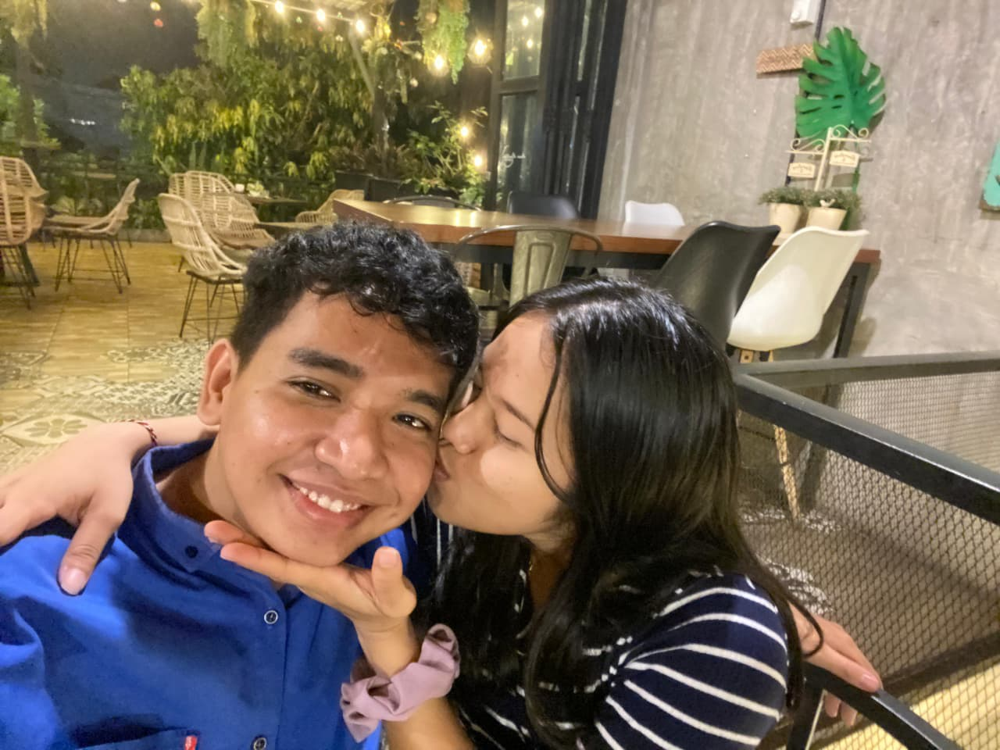
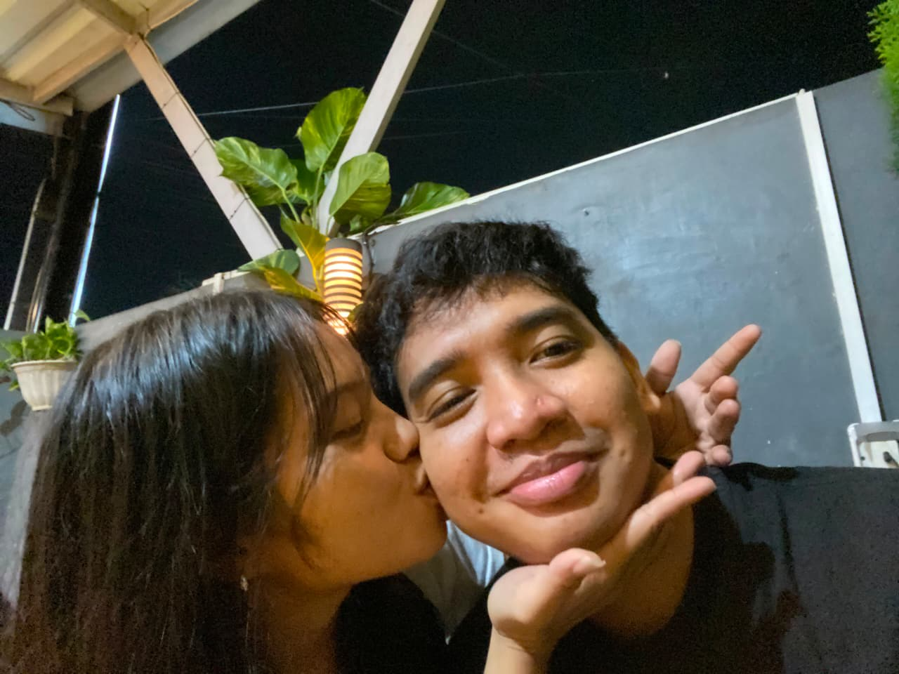
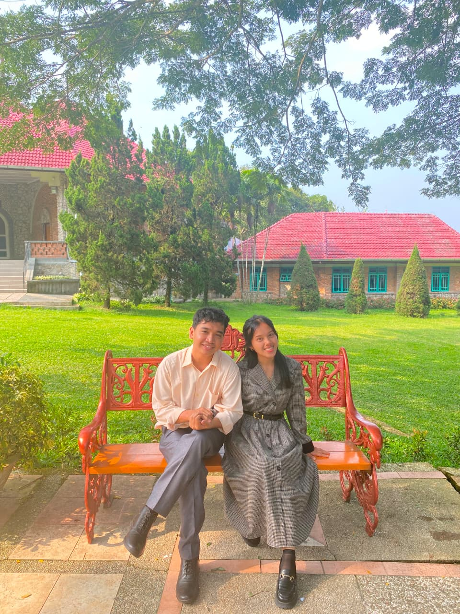

"Ada banyak hal yang sebenarnya ingin aku katakan."
"Tapi setiap kali ingin mengatakannya..."
"aku selalu tidak tahu harus mulai dari mana."
"Jadi kali ini..."
"aku tulis semuanya di sini."

FRAME 001
"Hari ketika aku pertama kali sadar bahwa ada wanita yang mencintaiku..."

FRAME 002
"Ternyata kehadiran seseorang bisa membuat hari biasa terasa berbeda."

FRAME 003
"Dan tanpa sadar..."
"aku mulai menunggu pesanmu dan selalu menginginkan diri mu every time."
"Naikkan volumenya sedikit."
"Aku mungkin tidak pandai menunjukan perasaan dan sering membuat kamu bingung."
"Aku mungkin terlihat biasa saja."
"Kadang aku bahkan tidak tahu bagaimana menjelaskannya dengan perasaan ku ini."
"Tapi kamu berarti."
"Lebih dari yang kamu tahu."
"And somehow..."
"I'm still here."
"Sebenarnya..."
"Aku tidak membuat website ini untuk menceritakan masa lalu."
"Aku membuatnya untuk mengatakan sesuatu yang sampai sekarang belum bisa kukatakan dengan sempurna."
I
LOVE
YOU.
"Bukan karena kita sempurna."
"Bukan karena semuanya selalu mudah."
"Tapi karena dari sekian banyak orang yang bisa hadir dalam hidupku..."
"Aku bersyukur kamu adalah salah satunya yang hadir dalam hidupku."
"Kalau suatu hari nanti kamu lupa..."
"buka website ini lagi,karena website ini tidak pernah mati sepeti perasaanku."
"Dan ingat..."
"pernah ada seseorang yang memilihmu."
THIS WEBSITE WILL ALWAYS BE YOURS.